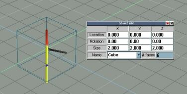
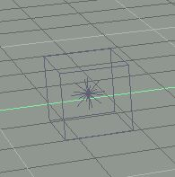
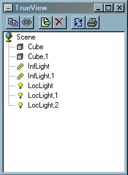
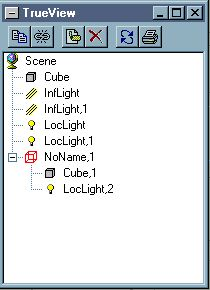
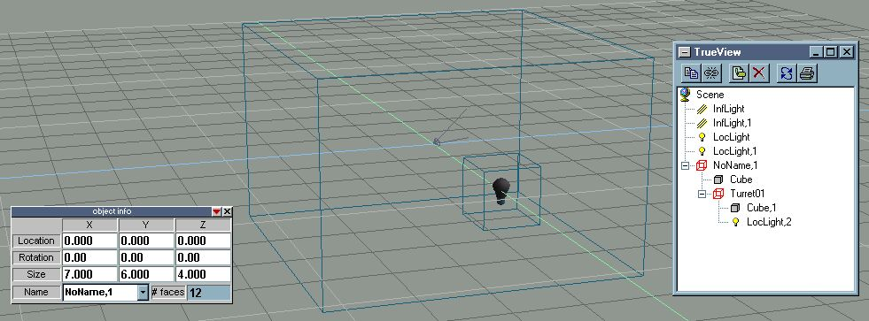
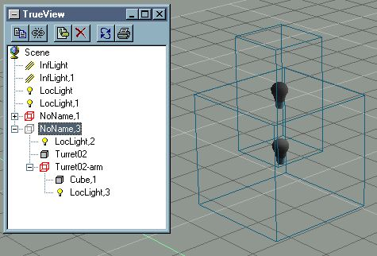
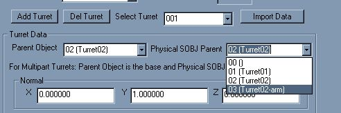
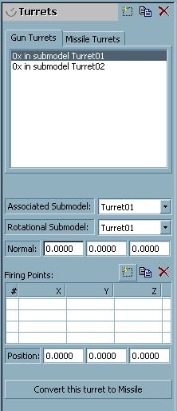

|
|
|
WHAT DOES THIS TUTORIAL COVER? For years people have been writing tutorials on how to make ships for FS2. Despite this many people regard making ships as an arcane art beyond the ken of normal people. It isn't. This tutorial will show you how to get a ship up and running in FS2. It might not show you the best or even the easiest way to do it. I've gone for simplicity of understanding here. Once you know what you're doing you'll probably find easier and quicker ways to do things. There are several tutorials on the modding page to help you with that. What I've decided to do is instead make a tutorial that anyone can use. Here's a picture of what you'll be building. The GTC Great Big Cube. WHAT WILL I NEED? You'll need a copy of True space 3 or greater (If you need to register your free copy go here). you'll also need PCS (pof constructor suite) and Model View I've included a copy of the .pof file and the cob/scn files it's made from and you can download it by clicking here. BUILDING THE HULL Before you get started a word of warning. True space has a habit of hiding icons under the ones you can see. e.g. the icons that make cylinders and spheres are hidden under the cube icon and can only be popped up by clicking and holding the left mouse button. If at any point you can't see an icon I mention try looking at some of the pop up menus. With that in mind lets get started.  Next we'll change the size of the cube a little. A 2x2x2 cube in True space will still be quite small in FS2 so make the ship bigger by changing the size settings to 6x6x4. Right, that's the hull completed (I told you this was a simple ship!). When building your own ships you should spend a little longer on it than we've done sweeping (AKA extruding), beveling and moving points around until you have something that looks like a ship. However for this example it isn't important. We're going straight on to putting some guns on our cube! SINGLE PART TURRETS  This is a single part turret. You may be surprised at how often these things have some people tearing out their hair. In fact they are incredibly easy to do. Make another cube. Change the size to make it smaller. I've made mine 1x1x1. What you now do is make a light (click on the light bulb icon). Move the new light to the front of the small cube. If you were making a real turret you would want to place the light at exactly the point your gun will fire from. I've just stuck the light in the middle of the smaller cub on this ship.
Now here is the bit where it gets tricky. You have to glue the light to the turret then the turret to the ship. Most people try to do this using the Glue as Sibling and Glue as Child options and the usual result is glue everywhere, things stuck in the wrong places and PCs being flung out of the window. However versions of True space after version 3 come with a little extension called TrueView. With this you can glue stuff without ever having to go near the nasty sticky glue icons.  
You then pick up the newly created light in TrueView and drag it on top of the turret object (it will probably be called Cube,1 but if you don't have that simply select the turret in the main window and see what gets selected in TrueView). A new group called Noname,1 has been created. If you click on the plus sign to open it up and have a look you'll see that it contains the turret object you created and the light. The picture in TrueView will then look like the one on the right. Rename the whole group Turret01 and rename the light Turret01-fp_01. What you then do is position the turret in the correct position in relation to your ship. I've stuck it on the front. You then drag and drop the turret on top of it. You should end up with a scene that looks like the one below.  If you were making a proper ship you'd probably want to copy this turret several times and stick them all to the hull. You would then name each turret in order e.g. turret02, turret03 etc. However for this simple tutorial one of these turrets should be enough to teach you how to make these things. MULTI PART TURRETS If single part turrets tempt you to throw the computer out of the window, multi parts will probably tempt you to follow it. However they aren't actually that tricky.  You should have ended up with a similar hierarchy to the one you can see in the pic on the left. If you've made a single part turret it should have the same hierarchy as Turret02. CONVERTING THE SHIP There are a whole set of tools you can use for converting the ship. Cob2pof, Cob2fs2, PCS and now even Model View has now stepped into the fray. My advice is to try as many as you can and see what works for you. We'll be using PCS version 1.3.42 for this conversion. EDITING THE POF Unfortunately at the moment I haven't found a tool that will do everything at the moment so I tend to swap between PCS and Model View when it comes to editing pofs. I find Model View has a much better renderer than PCS but it won't do dock points or paths so you'll need PCS towards the end at the very least. I've also had trouble with high poly models in ModelView that don't show up in ModelView. As with many other things in this guide as you grow more experienced you'll find that you prefer a tool for certain tasks and stick to that.
There are a few terms used in the next part of editing a pof that require a little explanation. Don't worry to much about the jargon, if you don't understand it at the moment re-read this section once we have completed the model and it should seem much clearer. The white lines on this picture represent the normals of each of the Rakshasa's turrets. They extend out from the turrets firing point. The normal is closely connected to another value we may have to edit later, the field of view or FOV. The FOV limits what the turret can shoot at. A turret with a FOV of 180 degrees can shoot at any enemy ship in front of it, directly above or below it or directly to the left or right. A turret with a field of view of 90 degrees is more limited and can only hit things up to 45 degrees above, below or to the right or left of the centre of the FOV. This brings us to the normal. The normal is a line extending from the firing point that shows where the centre of the field of view is. Therefore if you know the normal and the FOV you can predict what the turret will be able to hit. The last two new terms you'll need to know are given different names in PCS and Model View just to make things more confusing. The first term Associated submodel (Parent Object in PCS) is the object that is the base of the turret (i.e. Turret01 or Turret02). The second term Rotational Subobject (Physical SOBJ Object in PCS) is the name of the barrel if the turret has one (i.e. Turret02-arm) or simply the same as the Associated submodel if it doesn't (i.e. Turret01 again). Okay, I hope that all that wasn't too confusing. If it was don't worry about 5 minutes of altering the values in ModelView or PCS should be enough for you to figure out what this was all about. Since both work differently I'll talk you through how to use both. If you have any major problems simply go back the .cob reconvert and try the other program. Once you've finished and saved the model load it up in the program you were having problems with and you should be able to see what you should have done. EDITING THE POF IN PCS  For this tutorial we will be using PCS for most of the grunt work. Click on the turrets tab. The current version of PCS is clever enough to do almost all the work of building a turret for you so all the boxes will have values in them. However there is one area where PCS falls over. It doesn't automatically set up multi-part turrets correctly. EDITING THE POF IN MODELVIEW ModelView to edit the pof since ModelView's better renderer will make it easier to see what you're doing. For certain parts of a .pof you have to swap back to PCS (or use both programs at the same time).  Due to the way we named our Turret objects in True space, PCS has figured out what they were meant to be. However since we didn't tell it everything it needed to know there are still some changes that need to be made. As you can see Model View has already got the correct values for the Associated submodel and the Rotational Submodel (both are Turret01) however it doesn't have a value for the normal or for the firing point. It is much easier to add a normal if you add a firing point first because then the normal will be displayed as soon as you enter it. Just click on the new firing point button (it's the raised one in the picture). We'll leave the firing point as 0,0,0 for the time being. Now change the third normal from 0 to 1. Instantly you'll notice a line jutting out from the turret and pointing forwards, like in the picture below. If you switch to wireframe mode (CTRL-1) you'll notice that the start of the normal is halfway in the turret. We want it to be on the surface so we are going to have to move the firing point. Change the Z of the firing position to 10 and you'll notice that the cross showing the end of the normal moves onto the surface of the turret, exactly where we want it. Turret 1 is now complete. Just for the sake of good habit click accept and then select turret 2 (click on the 0x in Turret02). ADDING SUBSYSTEMS After turrets probably the most important addition are subsystems. Lots of things are currently hard coded into the game. For instance you won't get your ship to move unless you add an engine subsystem. One thing to remember about subsystems is that FS2 will treat engine, engines, engine01 or engineering as engine subsystems (meaning that they'll all have to be destroyed before the ship will be disabled - Of course you may want to have your ship disabled when engineering goes down.). The same definitely goes for subsystems containing the word weapon and you should probably avoid using sensor or communication although I don't think there are any hard coded events for those subsystems. Apart from that rule you can call your subsystems anything you like, you aren't limited by the systems in FS2. If you want a reactor, armoury or Wine Bar subsystem you can have one. They just won't do anything unless you set them to in FRED. THE END? Okay all that remains is to make a new table entry for your ship and to move the pof file to your data\models dir. Once you've done that you can enjoy being shot at by ship that looks like a really bad 60's special effect. I intend to add to this FAQ details on how to add engine glows, paths and even fighter bays and docking point to the GTC Great Big Cube but for now that's all. |